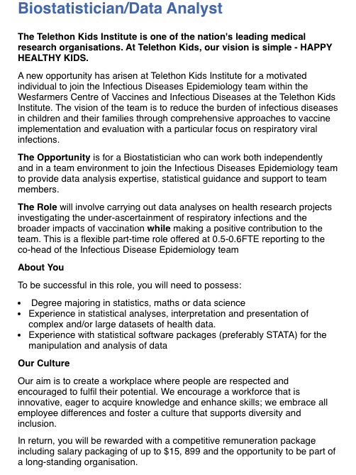
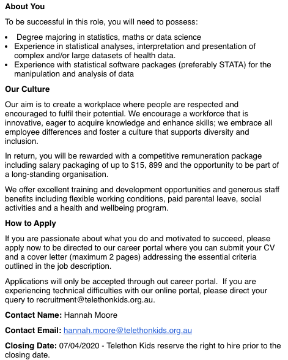
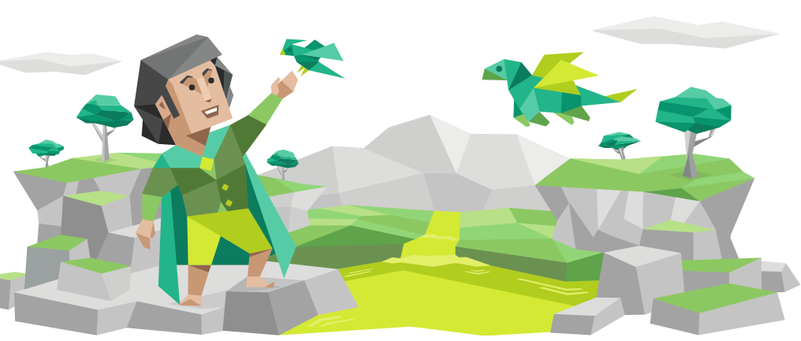
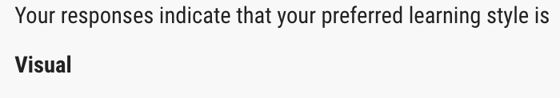
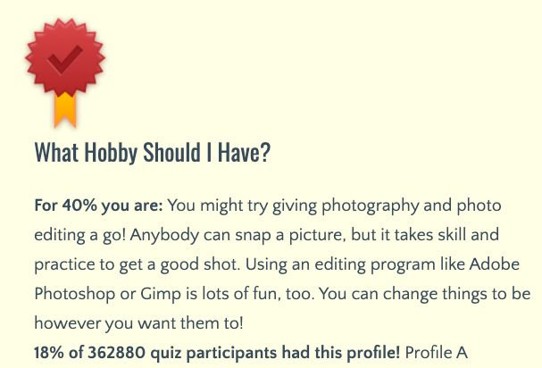

Wenjun Website
Personal Information:
Name: Wenjun Bi
Student Number: S3858029
Email: s3858029@student.rmit.edu.au
Nationality:Chinese
Culture: eating rice 24/7, practice filial piety,
Hobby: Basketball, video game, surfing the web
Pet: No pet, but if I get a pet would prefer black cat (feel mysterious)
Interest in IT
1. My interest in IT revolves around the manipulating data and presenting into anaesthetic pleasing manner that can easily convey information to the audience. My interest started mainly last year when I start seeing SQL data and graph that present in ways I was highly intriguing, making me want to learn how to do it one day. I think I am a creative person but lack artistic skills and want use to create something visual for people to see.
2. I want to enrol in a University that values innovation and education. RMIT is the one of the leading young University in the world . A long with the fact that I RMIT feel value science and technology department really make attractive University. A long with the prestigious 132 years of teaching and providing education is why I chosse RMIT.
3. I expect to learn how to develop programming skill and software, database management, fundamentals of computer-based systems and web development. Gain expert skills and knowledge through practical project development and hands-on experience in technology infrastructures.
Ambition
1. The job focuses on independently and in team environment to analyse (especially children) effect infectious disease has on children. The work aims help assist a better approach in developing vaccines and providing health advice to the community. Through the ultisation of digitally enhance graphs that visually pleasing and convey backup researched statistical data. Fulfilling passions of working in data analyst and health science.
2. The ideal candidate would be someone with a degree majoring in statistic, mathematics or computer science. Experience in statistical analyses, interpretation and presentation datasets. Prefer experiences in STATA or data manipulation and analysis software.
3. Current qualification and skills:
- trilingual: Proficient in English and Cantonese, Intermediate Mandarin.
- Strong organisational skills: never missed assignment deadline.
- Graduate from high with HSC and gaining distinct in mathematics
- Proficient with wide range of Microsoft Office software.
- Communicative skills gain from 2 years experience in retail environment speaking to customer in gian interpersonal skills.
4. Steps to reaching my dream job.
- year.
Gain experience and knowledge from study, put extra effort into study and assignemt. During breaks or holidays study take extra effort and time to learn other programming lnguage or continue enhacing programming skills such as trying project on the internet.
- Year.
Expect to learn harder and more specialise programming techniques. During the year will continue to look for internship and scholarship that help me gaining future employment.
- year.
At my final year I expect to do project that resemble real information technology project. Will look for partime or casual work in IT.
- year.
Will have a entry level job however, may need to consider another degree in health science, a desirable degree to have in combination with IT degree, thus increase job prespect.


Dream job link
Personality Trait
Myers Briggs Test
The Myer- Briggs has giving a detail exam of your personality traits through long list of qustionnair. The system determin I am a mediator personality INFP-A/INFP-T. Mediator re considered diplomatic, guided by strong principles and their action is determine by intent not rewards or punishment. (Myers-Briggs, 2020).

Learning style Assessment
Learning style assessment from How.To.Study try to assess user their best learning style under 3 categoryies, auditory, visual and kinesthetic. The assessmennt consist of 30 questions, each with 3 options Like, somewhat likely and unlikely. After questionnair I system assign me as a visual learner. Visual learner remember informaton best when diagram, maps and written notes are used (Kreger, 1996).

Hobby Assessment
"What Hobby Should I Have" assess a suitable hobby for you base on 20 questionnair. After the questions the system believe photography and photo editing. Utilising a creative skills (Freak & King, 2013)

What do the results of these test means for you?
After completing the 3 personality trait test, I was able to gain a better understanding of myself. The test shows postive and negative traits I may have never notice before. Also able define my personality better. This can be use when interview questions or casual conversations with friend. It also open a possible weakness I can work on and hobby I should try.
How do you think think results may infulence you?
While te initial result play a factor into reflecting my current personality and life choices but after period has pass I will eventually forget about it. I will consider working on my weakness that I never thought about after comleting the Myers-Briggs Test. I will also continue doing things I am good at. Also try different study techniques and hobbies that I may never have.
How should you take this into account when forming a team?
I would try to form group with member you can work with, just naturally easier to understand and communicate with. However, it is also in the best interest of the assignment to have a wider range to personality so that all areas of weakness can be cover. Avoiding conflict is hard but there are ways to manage them for a better team environment.
ZooAtHome - Project
Overview
ZoosAtHome is a free augmented reality app that display a wild range of ranges animals from extinct to extant. The app utilises a projection type base augmented reality program, it projects from a selected range of animal onto the physical environment the users in.The animal over lay through a real time video of the environent. The chosen animal will appear on the screen displaying an animation fitted to animal in nature accompany with real record audio.
Motivation
Zoo are often crowd and full of noise, not a children friendly place as they can easily get lost in crowded place and disable people especially those to autism who is highly sensitive to sound frequency and for people who is handicap as it hard for them to navigate. ZooAtHome hopes to bring the experience of witnessing wild and extinct animals onto the user’s phone without the need to be at a zoo or sanctuary. The apps help bring a safe environment for children and disable people without being in large, rowdy places from people and animals. In addition to saving money from needing to travel to animal in zoo, animal sanctuary.
Description
ZooAtHome will be separate into 3 mode, catalogue, AR and creative mode (Thinkmobile).
Catalogue Mode
When in catalogue mode user get to browse through a wide range of animals in the catalogue, there is options to filter options on select categories such as continent, size, weight, height and search bar to go along with it, more options to be added later. During the catalogue mode unique feature consist of:
- A basic information of the animal is provided.
- Able to save previous selection and set favourites.
- 3D model display.
- Available in different languages
- Link to Wiki page if user want more information on the animal
- Provide fun facts to achieve engagement with user
- An option to select into AR Mode
Augmented Reality Mode
When select animal is chosen it switches into augmented reality mode where the user gets to experience the animal in a more realistic manner. The selected animal will appear on the device’s screen and prompting an animation accurate to the animal’s nature, accompany with a record audio file that is pair together with the animal. Animals will be in a 3D model in HD to give sense of realism to the user. User will then be able have a interactive model depending on their actions. Unique featues include:
- Tapping on the animal multi times can frighten or cause a defensive animation.
- Rotating option to see animals at all angle.
- Rotating device landscape cause the animal to sleep or take naps.
- Using voice input can be register as for certain action. E.g saying the word jump will cause the animal to display the jump animation.
At the corner of the screen a UI design that resemble camera icon, when press a screenshot or video is taken with the animal and background at the current time which is automatic save onto the device library. This can lead to creative pictures such as giraffe walking around the Sydney Harbour Bridge, also giving a realistic perception due to the utilisation of Unity3D.
Creative Mode
Creative mode user gets to design a more unique model by mix and matching of dissected section and connecting them together. There is also option in changing colours and adding audio file from their own device or from the app. In creative mode where users get to manifest their creative side.
Tools and Technolog
Software
Unity3D - An advance virtual gaming engine that support 2D and 3D graphics(Thinkmobile,2020). It composes of user-friendly drag and drop interface and lots of features making it a reliable choice for building the augmented reality model of the animals.
ARKit – Open source framework created by Apple to create Augmented Reality apps on IOS connect with other software and hardware for better experience such as the camera, gyroscope and accelerometer (Thinkmobile,2020).
Hardware
Server for end to end connection to retrieve information for between the user and the server.
A smarthpone device with minimum specification:
- Internet connectivity
- GB of ram
- WiFi 802.11a/b/g/n/ac, 3g or above
- Front Camera - 8MP, 8 MP Depth sensor, 8MP 3D depth sensor
- Gyroscope & accelerometers
- iOS – 11 or above
Skills Required
This project will required a large specialise team of Unity programmers for the 3D and 2D model, engieers for coding overall app and debugging, UI design team for a smooth user experience, language to developer to suppport mutliple language and Arkit programmer and iOS developer.
AR take average 3-10 day to make and developers can charge from $40 - $170 an hour. (thinkmobile,2020), while the project is large and complex the cost of the project look to cost $40, 800 to make. This is a big investment that is possible to make for big or medium size company. Even startup can take up a loan to consider this project.
Outcome
If the user who is disability or childred, provide an enjoyable experience which allow them immerse themselves into a more creative idea A quality of life changed for people parents and children such offering different type of experience for children to experience zoo, can we use to comfort crying children. Overall reduce amount of inconvenience cause for overall people, saving time and effort that should bette spend.